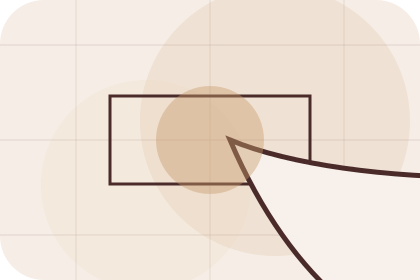
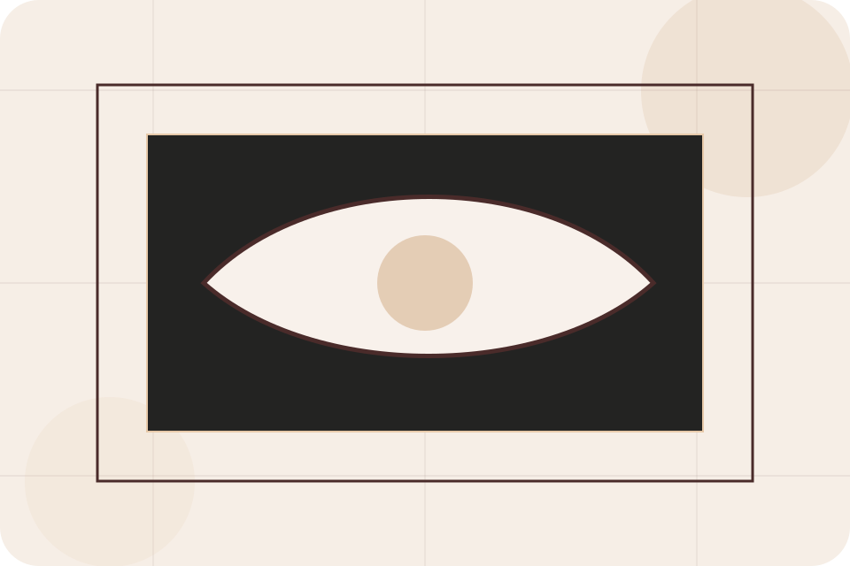
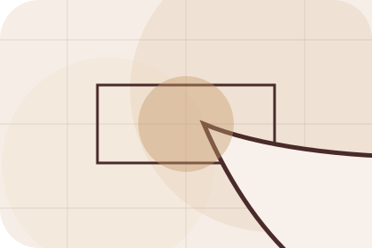
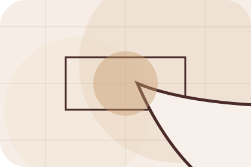
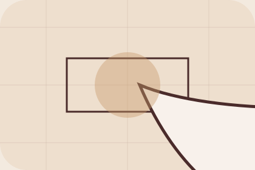

Context
Taste gives the page a specific angle instead of repeating the navigation label.
Studio / 01
Studio opens as a clear interiors decision hub: what Room offers, who it helps, why it matters, and which route to take first.
The first screen combines positioning, proof, primary action, and fast internal navigation, so people can act immediately or compare the rest of the studio route with context.
Editorial room hero
Select the closest route and Room keeps the next step, proof, and follow-up expectation aligned with taste and home confidence.

Studio / 03
Values adds commerce context to the studio route, using the luxury material moodboard structure to support taste and home confidence before visitors choose a next step.
Room uses material mood cards and focused copy to make the decision easier to scan, aligning the section with taste and home confidence rather than filling space.
Explore StudioValues gives the page a specific angle instead of repeating the navigation label.
The material mood cards show what to compare, what to avoid, and what matters most for interiors, furniture & home design visitors.
The final cue points to a useful internal route so the section keeps the journey moving.
Studio / 04
Signature adds commerce context to the studio route, using the luxury material moodboard structure to support taste and home confidence before visitors choose a next step.
Room uses material mood cards and focused copy to make the decision easier to scan, aligning the section with taste and home confidence rather than filling space.
Explore StudioSignature gives the page a specific angle instead of repeating the navigation label.
The material mood cards show what to compare, what to avoid, and what matters most for interiors, furniture & home design visitors.
The final cue points to a useful internal route so the section keeps the journey moving.
Studio / 05
Team introduces the people, roles, or specialist credibility behind Room so the decision feels less anonymous.
The copy ties names, roles, credentials, or availability back to the decision on the page instead of treating profiles as decorative biographies.
Explore StudioThe person, team, or specialist function connected to team is easy to understand.
Credentials, responsibilities, or availability are tied to the visitor's decision, not listed for decoration.
The section explains how to move from profile interest to a practical conversation or booking path.
Studio / 06
Materials adds commerce context to the studio route, using the luxury material moodboard structure to support taste and home confidence before visitors choose a next step.
Room uses material mood cards and focused copy to make the decision easier to scan, aligning the section with taste and home confidence rather than filling space.
Explore StudioRoom structures materials around context, judgment, and a clear next route so visitors can compare the block quickly before they start the design.
Start DesignStudio / 07
Experience adds commerce context to the studio route, using the luxury material moodboard structure to support taste and home confidence before visitors choose a next step.
Room uses material mood cards and focused copy to make the decision easier to scan, aligning the section with taste and home confidence rather than filling space.
Explore Studio

Experience gives the page a specific angle instead of repeating the navigation label.
Studio / 08
Process explains the operating sequence so visitors can see how the first request becomes a clear recommendation and follow-up.
The steps are written from the visitor side: what they do first, what Room clarifies, what they receive, and how support continues.
Explore StudioHow visitors begin this route and what detail is useful at the first step.
What Room reviews, filters, or explains before recommending the next move.
What the visitor receives afterward, including support, proof, or a handoff to the next page.
Studio / 09
Trust gives the proof layer for studio: standards, evidence, and reassurance that make the next decision feel grounded.
Instead of relying on vague claims, Room presents visible standards, process cues, and proof artifacts that help interiors visitors judge fit.
Explore StudioVisible proof that helps visitors believe the claims behind trust.
The quality, safety, or operating expectation this section makes explicit.
What becomes clearer before someone decides whether to start the design.
Studio / 10
Room closes the studio route with a clear action, a quick reminder of the value, and a low-friction way to start the design.
Visitors who are ready can use the primary action. Visitors who are still comparing can scan the section links, proof, and support routes before they start the design.
Start DesignThe final block keeps the choice simple: act now, compare one more proof route, or send enough detail for a focused response.
Start Designtaste and home confidence
A material-led interiors site with luxe moodboards, serif headlines, room selectors, and sourcing CTAs. Studio ends with a direct path to start the design, plus enough context for visitors who still need to compare.

Start DesignInformation is provided for planning and should be reviewed for the final client, location, and operating rules.